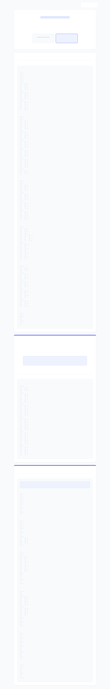

PROBLEM IDENTIFICATION & EXPLANATION
Structuring the IB Paper 1 Essay
Moving from a feature-based list to an effect-driven argument.
Before Structure
Feature-driven logic tree
After Structure
Effect-driven logic tree
The "Before" Structure
Organized by technique rather than analytical argument.
Introduction
Body Paragraph 1: Statistics
Extra Paragraph: Statistics as warning
Body Paragraph 2: Colours and Images
Body Paragraph 3: Font, Bolding, and Layout
Conclusion
💡
Why Revise?
The Before Structure is a great
inventory
of features, but a strong IB essay needs a
guiding thread
.
Instead of grouping by
technique
, we should group by
effect and purpose
.
The Guiding Question:
"How do the visuals complement the language in getting across important facts?"
The "After" Structure: Overview
A thesis-driven approach focusing on how visuals and language work together.
Suggested Structure - Logic Tree
The "After" Structure: Detailed Breakdown
The complete, detailed logic tree for the revised essay.
Guiding question:
How do the visuals complement the language in getting across important facts?
Introduction
Body Paragraph 1: Layout makes factual information accessible
Body Paragraph 2: Icons and charts make statistics concrete and memorable
Body Paragraph 3: Colour and typography create emphasis and urgency
Body Paragraph 4: Factual tone and simple visuals suit the target audience
Conclusion
Text type:
A visually colourful fact sheet
Producer:
Caring Senior Services
Topic:
Fall prevention for elderly people
Context / platform:
Published on the company website
Techniques:
Statistics
Bright colourful images
Eye-catching text types
Audience:
Healthcare workers
Families with elderly relatives
Aged-care workers / users
Purpose:
Communicate important facts
Emphasise the importance of looking after elders
Warn about the harm caused by falls
Encourage awareness and precaution
Main feature:
Relevant statistics and numerical data
Examples from the infographic:
“1 out of 4”
“2 million adults”
“Every 10 minutes”
Other numbers and percentages
Effect 1: Makes the danger concrete
Falls become measurable
The problem seems serious
The audience sees that falls are common
Effect 2: Makes information easy to understand
Short numbers are eye-catching
Simple figures are easy to read
A wide audience can understand quickly
Effect 3: Creates awareness
Readers may not know these facts before
Care workers may become more alert
Families may pay more attention
Effect 4: Builds credibility
The company appears knowledgeable
The company appears concerned
The company appears trustworthy
The company appears responsible
Effect 5: Builds brand image
Sharing free information seems caring
Caring Senior Services appears like a reliable care provider
Main idea:
Statistics are not empty numbers.
What statistics represent:
Real incidents
Real harm
Real cases where falls were not prevented
Effect:
They warn the senior community
They show how common falling is
They show the damage falling can bring
Social problem addressed:
Misunderstanding
Underestimation
Carelessness
Audience responsibility:
Families should look after elderly people
Healthcare workers should prevent falls
Friends should be aware
The broader community should take the issue seriously
Main feature 1:
Colour scheme
Specific colours:
Orange, Light blue, Navy blue, Light grey, White
Colour contrast:
Orange = warm tone, Blue/grey/white = cooler tones
Effect of colour:
Orange suggests urgency and importance
Grey suggests seriousness and formality
Blue / white suggest calmness, cleanliness, or professionalism
Main feature 2:
Minimalist elderly images
Specific image type:
Simple elderly figures, Male and female icons, Medical / body-
related icons
Effect on clarity:
The reader immediately understands the topic, The images match
the written information
Effect on audience:
Families may think of elderly relatives, Care workers may think
of elderly people they care for, Readers may feel more emotionally connected
Effect on accessibility:
Simple images are easy to understand, Different age groups
can understand the message, The reader does not need complex language or calculation
Main feature 1:
Simple clean font
Description:
Minimalist, Clean, Not overly dramatic
Effect:
Creates formality, Creates credibility, Matches the serious healthcare topic
Main feature 2:
Bolding of important information
Examples:
Statistics, Causes of injury, Injury types, Key words
Effect:
Helps readers find information quickly, Makes key facts stand out, Creates
visual hierarchy
Main feature 3:
Uppercase and bold word “DIE”
Visual features:
Uppercase, Bold, Orange colour
Effect:
Creates shock, Shows urgency, Highlights the fatal risk of falls, Turns
factual language into a warning
Main feature 4:
Smaller unbolded supporting text
Function:
Gives background context, Separates less important details from main
facts, Prevents the page from becoming overloaded
Effect:
Makes the layout easier to scan, Helps readers focus on the most important
facts, Makes the fact sheet more efficient
Audience connection:
Elderly readers may have eyesight problems
Bold text helps them notice key information
Families and care workers can understand the warning quickly
Restates issue:
Fall prevention is urgent, It is common, It is serious
Restates techniques:
Selective colour choices, Relevant statistics, Calculated bolding of
words
Restates audience:
Families, Friends, Healthcare workers
Final warning:
Falls can damage elderly people’s lives, People should not ignore
prevention, Elderly communities need more awareness
Introduction
Identify text type, source, audience, purpose
Thesis: visuals + language make facts clear, urgent, and memorable
Body Paragraph 1: Accessibility
Layout
Information boxes
Short factual statements
Effect: easy to scan and understand
Body Paragraph 2: Concrete statistics
“1 out of 4” + human icons
“Every 11 seconds” + clock
“Vision problems” + eye icon
“95%” + pie chart
Effect: numbers become visual, memorable, and real
Body Paragraph 3: Urgency and emphasis
Orange highlights
Blue / grey professional tone
Large numbers
Bold / uppercase “DIE”
Effect: key facts become alarming and difficult to ignore
Body Paragraph 4: Audience suitability and credibility
Simple language
Minimal jargon
Familiar icons
Professional design
Effect: suitable for elderly readers, families, carers, and healthcare workers
Conclusion
Visuals organise the facts
Visuals clarify the statistics
Visuals intensify the warning
Final point: language and visuals work together to promote fall prevention
Text type:
Infographic / fact sheet
Source / producer:
Caring Senior Services
Topic:
Fall prevention among elderly people
Context / platform:
Published on the company website
Audience:
Elderly readers, Families with elderly relatives, Carers / aged-care workers,
Healthcare workers
Purpose:
Inform readers about the risks of falls, Warn readers about the seriousness of
the issue, Encourage awareness and prevention
Thesis:
The infographic xxxx to make important facts easy to understand and difficult to
ignore.
Main function:
The layout helps readers process many facts quickly.
Authorial / visual choices:
Grid-like structure, Separate information boxes, Short factual
statements, Clear title: “FACT SHEET”, Each section focuses on one fact or risk
Language connection:
The language is brief and factual, Most sentences are short, The
wording avoids complex medical explanation
Visual connection:
The boxes separate information clearly, The reader can scan the page
quickly, The layout prevents the information from feeling overwhelming
Audience effect:
Elderly readers can understand the key message quickly
Families can identify the main risks without specialist knowledge
Healthcare workers / carers can absorb the facts efficiently
Link back to guiding question
Main function:
The visuals turn abstract numbers into immediately understandable facts.
Key examples:
“1 out of 4”
- Language: gives the exact ratio | Visual: four human figures, one
highlighted | Effect: the reader can see the risk directly
“Every 11 seconds”
- Language: gives frequency | Visual: clock icon | Effect:
creates a sense of urgency and repeated danger
“Vision problems”
- Language: names a risk factor | Visual: eye icon | Effect: makes
the cause easy to recognise
“More than 95%”
- Language: gives a percentage | Visual: pie chart | Effect: helps
the reader grasp the large scale of the statistic
Deeper analysis:
Statistics are not presented as empty numbers, The icons connect numbers
to real elderly bodies and real harm, The combination of number + image makes the facts
easier to remember
Audience effect:
Readers do not need to calculate or interpret complex data, Families may
feel the danger is personally relevant, Carers may become more alert to preventable risks
Link back to guiding question
Main function:
Colour, bolding, and text size guide the reader toward the most important
facts.
Colour choices:
Navy blue: Creates a serious, professional, healthcare-related tone
Orange: Highlights danger, urgency, and key information
White / light text on dark backgrounds: Improves contrast and readability
Grey: Adds seriousness and balance
Typography choices:
Large numbers: “2 million”, “95%”, “19 minutes”, “30,000”
Bold keywords: “MOST COMMON”, “BRAIN INJURIES”, “DIE”
Smaller supporting text: Provides extra detail without distracting from the main
facts
Language connection:
The wording is factual and restrained, The facts themselves are
serious, The visual emphasis makes the seriousness more noticeable
Audience effect:
Readers notice the most alarming information first, The uppercase “DIE”
creates shock, The contrast turns factual information into a warning
Link back to guiding question
Main function:
The combination of factual language and simple visuals makes the message
suitable for a broad, non-specialist audience.
Language choices:
Concise wording, Direct statements, Little or no technical medical
jargon, Heavy use of numbers and factual claims
Visual choices:
Simple human icons, Body-related icons (eye and brain), Clock and chart
images, Clean, professional design
Audience connection:
Elderly readers may need clear and readable information, Families
need quick warnings about risks, Carers need practical awareness, Healthcare workers may
value factual credibility
Credibility / producer image:
The fact sheet makes Caring Senior Services appear
responsible, The use of statistics makes the organisation seem informed, The professional
design supports trust
Link back to guiding question
Return to guiding question:
The visuals do not merely decorate the language.
Restate main functions:
Layout and visual path organises the facts, Icons and charts make
numbers concrete, Colour and typography create urgency, Simple design suits the target
audience
Restate overall effect:
The fact sheet makes elderly fall prevention seem clear, serious,
and preventable.
Final evaluative sentence:
By combining xxx, Caring Senior Services successfully xxx